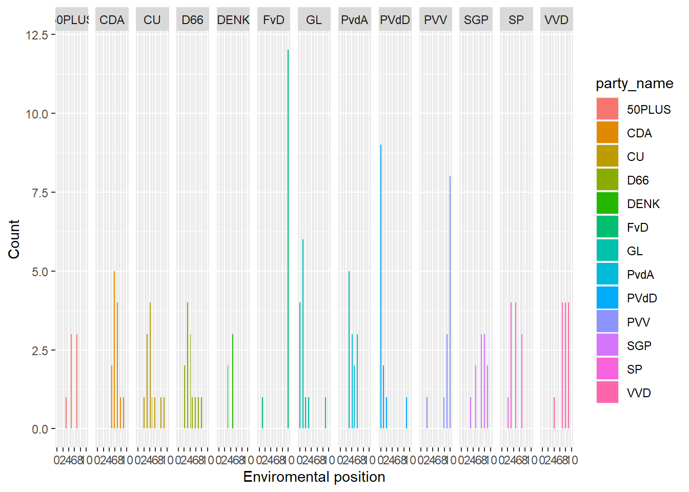
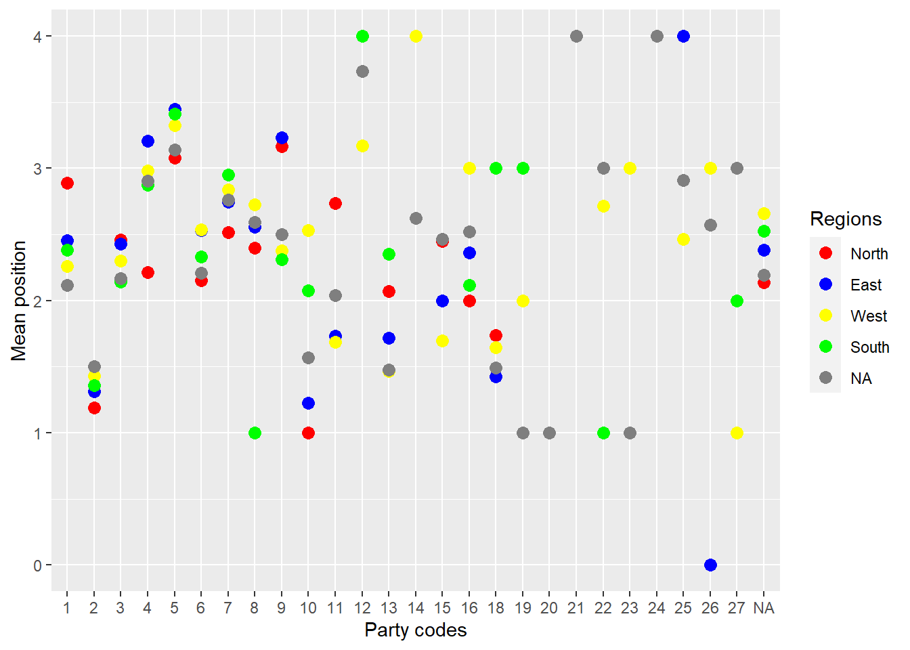

Last compiled on július, 2022
rm(list = ls())fsave <- function(x, file, location = "./data/processed/", ...) {
if (!dir.exists(location))
dir.create(location)
datename <- substr(gsub("[:-]", "", Sys.time()), 1, 8)
totalname <- paste(location, datename, file, sep = "")
print(paste("SAVED: ", totalname, sep = ""))
save(x, file = totalname)
}
fpackage.check <- function(packages) {
lapply(packages, FUN = function(x) {
if (!require(x, character.only = TRUE)) {
install.packages(x, dependencies = TRUE)
library(x, character.only = TRUE)
}
})
}
colorize <- function(x, color) {
sprintf("<span style='color: %s;'>%s</span>", color, x)
}packages <- c("haven", "tidyverse","srvyr","sjlabelled")
fpackage.check(packages)#> [[1]]
#> NULL
#>
#> [[2]]
#> NULL
#>
#> [[3]]
#> NULL
#>
#> [[4]]
#> NULL# load in the data
kieskom <- read.csv("./data/kieskompas_df.csv")
# names(kieskom) #variable labels are the Dutch statements... let's relabel them
names(kieskom)[-c(1, 2)] <- labs <- c("build1", "build2", "build3", "democracy1", "democracy2", "democracy3",
"democracy4", "social1", "social2", "social3", "social4", "climate1", "climate2", "climate3", "climate4",
"educ_care1", "educ_care2", "educ_care3", "educ_care4", "educ_care5", "immigration1", "immigration2",
"immigration3", "foreign_policy1", "foreign_policy2", "foreign_policy3", "foreign_policy4", "justice1",
"justice2", "justice3")
kieskom <- kieskom[-1] # exclude the indicator column
names(kieskom)[-1] <- paste0("kieskom_", names(kieskom)[-1]) # add a kieskom label to the column names
names(kieskom)[1] <- "party"# public data include expert-level data (ie, expert judgement); and mean and median judgements we
# use data at the expert-level
pop <- read_dta("./data/expert_data_stata.dta")
# subset Dutch parties (country id=19)
pop <- pop[which(pop$country_id == 19), ]
# subset party and dimensions names(pop)
pop <- pop[, c(4, 6:21)]
# add poppa label to variables names(pop)[-c(1)] <- paste0('pop_',names(pop)[-c(1)])ches <- read_dta("./data/CHES2019_experts.dta")
ches <- as.data.frame(ches)
dutch <- 1001:1051 #Dutch party ids
ches <- ches[ches$party_id %in% dutch, ] #subset Dutch parties
# subset party and dimensions names(ches)
ches <- ches[, c(3, 5:49)]
# add ches label to variables names(ches)[-c(1)] <- paste0('ches_',names(ches)[-c(1)])
# unique(pop$party) unique(ches$party_name)Assignment 1
What is the conclusion of the authors about inferring about a party position using the mean of expert responses?
The mean is biased both when experts perceive the scale in the same way (a) and when some experts in the experiment are coded to take a different view from the majority (b). Increasing the number of items reduces the noise but does not eliminate the bias. Lindstädt and colleagues suggest using the median, although it also underestimates the truth in case b.
Lindstädt and colleagues state: “Studies using expert surveys largely rely on mean expert placement, using standard deviations or standard errors to assess uncertainty. Yet, the shape of expert placement distributions can vary drastically across the items in a survey. Political parties, for example, can have similar estimated mean party positions based on very different distributions of expert placements.” Pick an item that reflects a policy dimension you are intested in, from either the POPPA or CHES dataset. Find Dutch parties that have approximately equal mean-scores on that particular item; and investigate how the shape of expert placement distributions varies across these parties. Use histograms to illustrate. If you need help, click the Code button on the right
environment<- ches %>%
group_by(party_name) %>%
summarise(m_env=mean(environment,na.rm=T))
print (environment)#> # A tibble: 13 x 2
#> party_name m_env
#> <chr> <dbl>
#> 1 50PLUS 5.57
#> 2 CDA 6.54
#> 3 CU 4.58
#> 4 D66 4.15
#> 5 DENK 4.2
#> 6 FvD 9.31
#> 7 GL 1.54
#> 8 PvdA 4.23
#> 9 PVdD 1
#> 10 PVV 9
#> 11 SGP 6.91
#> 12 SP 4.58
#> 13 VVD 7.69ggplot(ches, aes(x=environment)) +
geom_histogram(aes(y=stat(count), fill=party_name)) +
facet_grid(.~party_name)+ylab("Count")+
xlab("Enviromental position")+
scale_x_continuous(breaks = c(0,2,4,6,8,10))
Based on the article and your own empirical insights, make an informed decision about how to aggregate the expert-level responses regarding this dimension to the party-level. Use this strategy to aggregate the responses and construct a dataframe (named: df) with rows reflecting the parties and column reflecting the aggregated scores on the picked dimension(s). If you need help, click the Code button on the right
df<-ches %>%
group_by(party_name) %>%
summarise_all(list(median=~median(., na.rm = TRUE))) %>%
ungroup()# first translate party characters to lower case
kieskom$party <- tolower(kieskom$party)
df$party <- tolower(df$party_name)
# merge by party;
merged <- merge(df, kieskom, by = "party", all = T) %>%
select(-party_name)dpes <- read_spss("./data/DPES2021_v1.0.sav",convert.factors = FALSE)mosque<-dpes %>%
filter(!is.na(Wght_Tot)) %>%
as_survey(weights = c(Wght_Tot)) %>%
group_by(N76) %>% #Which party will you vote for?
summarize(mean = survey_mean(V143, na.rm = T)) #The government should prevent the construction of new Mosques in the Netherlands.mosque_region<-dpes %>%
filter(!is.na(Wght_Tot)) %>%
as_survey(weights = c(Wght_Tot)) %>%
group_by(N76,D001) %>% #Which party will you vote for? & Region
summarize(mean = survey_mean(V143, na.rm = T)) #The government should prevent the construction of new Mosques in the Netherlands.ggplot(mosque_region, aes(x=as.factor(N76),y=mean)) +
geom_point(aes(colour=as.factor(D001)),size=3) +
ylab("Mean position")+
xlab("Party codes")+
scale_colour_manual(name="Regions",labels=c('North','East',"West","South"),values = c("red","blue","yellow","green"))
parties<-as.data.frame(get_labels(dpes$N76)) #obtaining the party name labels
```{.r .test}
names(mosque)[1]<-"party_name" #defining common column names
parties<-parties %>% mutate(row_number= 1:n())
names(parties)[2]<-"party_name"merge <- merge(parties, mosque, by = "party_name", all = T) %>% #merge mosque positions with party names
filter(!is.na(mean))names(merge)[1]<-"party_code" #creating the common column name for matching with merged df
names(merge)[2]<-"party"
merge<-merge %>%
mutate(party = recode(party, 'boerburgerbeweging'= 'bbb')) %>% #replacing names with abbreviations
mutate(party = recode(party, 'groenlinks'= 'gl')) %>%
mutate(party = recode(party, 'christenunie'= 'cu')) %>%
mutate(party = recode(party, 'forum voor democratie'= 'fvd'))
merge$party <- tolower(merge$party)finalmerge <- merge(merged, merge, by = "party", all = T) fsave(finalmerge, "positions_data.RData")#> [1] "SAVED: ./data/processed/20220713positions_data.RData"fsave(merged, “positions_data2.RData”)